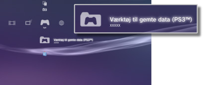

Spil > Afspilning af PlayStation®3 formateret software > Brug af gemte data
Brug af gemte data
Data for PlayStation®3 Formateret Software gemmes på systemlageret. Dataene vises under  (Værktøj til gemte data (PS3™)).
(Værktøj til gemte data (PS3™)).

Tips
- Gemte data administreres særskilt af den enkelte bruger. Hvis der er flere brugere under
 (Brugere), afhænger de viste elementer under (Værktøj til gemte data (PS3™)) af hvilken bruger, der er logget på.
(Brugere), afhænger de viste elementer under (Værktøj til gemte data (PS3™)) af hvilken bruger, der er logget på. - Hvis du vælger et ikon for gemte data og trykker på
 -tasten, kan du sortere gemte data efter opdateringsdato eller gruppere gemte data efter titel i den viste menu.
-tasten, kan du sortere gemte data efter opdateringsdato eller gruppere gemte data efter titel i den viste menu.
Lagring af gemte data på PSNSM-serveren
Data, der er gemt som PlayStation®3 formateret software, kan gemmes på en PSNSM-server og downloades på et andet PlayStation®3-system, så du kan fortsætte med at spille. Hvis du vil bruge denne funktion, skal du have en Sony Entertainment Network-konto og abonnere på PlayStation®Plus-abonnementsservicen.
Automatisk lagring af gemte data
Du kan regelmæssigt udføre en automatisk lagring af nye data og de senest opdaterede gemte data i onlinelageret.
I dette tilfælde skal du vælge funktionen for hver enkelt spil.
1. |
Gå til |
|---|---|
2. |
Vælg [Automatisk upload af gemte data], og indstil den til [Aktivér]. |
 (Spil), vælg det spil, der indeholder de gemte data, som du vil gemme, og tryk på
(Spil), vælg det spil, der indeholder de gemte data, som du vil gemme, og tryk på Tips
- Gemte data, der opdateres efter aktivering af indstillingen, uploades automatisk.
- Gå til
 (Indstillinger), indstil
(Indstillinger), indstil  (Systemindstillinger) > [Automatisk opdatering] til [Sluk] for at deaktivere automatisk opdatering af gemte data.
(Systemindstillinger) > [Automatisk opdatering] til [Sluk] for at deaktivere automatisk opdatering af gemte data.
Manuel lagring af gemte data
1. |
Vælg |
|---|---|
2. |
Vælg [Kopier]. |
3. |
Vælg [Online lager] som lagringsdestination. |
Download af gemte data fra onlinelager til PS3™-systemet
1. |
Vælg |
|---|---|
2. |
Vælg de gemte data, der skal downloades, og tryk derefter på |
3. |
Vælg [Kopier]. |
Tips
- Den maksimale lagerkapacitet er 1 GB, og det maksimale antal dataelementer, der kan gemmes, er 1000.
- Gemte data, der ikke er til PlayStation®3 Formateret Software, til software i PC Engine- og NEOGEO-format kan ikke gemmes.
- Kopibeskyttede gemte data behandles som følger:
- - Upload til onlinelager: Kan til enhver tid udføres.
- - Download af gemte data fra onlinelager: Når kopibeskyttede, gemte data uploades til eller downloades fra et onlinelager, skal du vente mindst 24 timer, før de samme data kan downloades igen.
- Ikke alle spil understøtter brug af onlinelager. Yderligere oplysninger om spil eller serviceydelser, der ikke understøtter onlinelager, fås ved at klikke her.